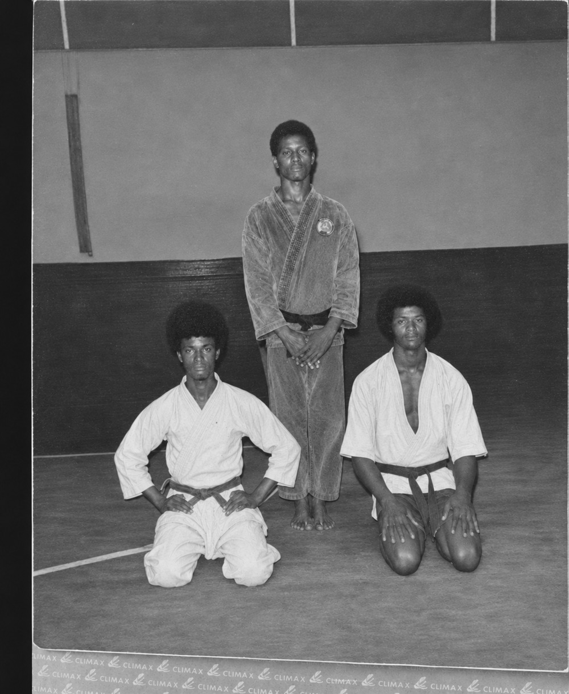
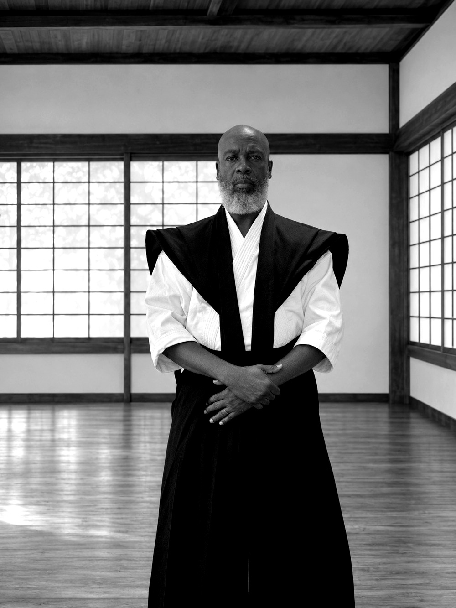

Nuestra filosofíaOur philosophy
Tradición, carácter y desarrollo personal.Tradition, character and personal development.
CAMT · PANAMÁ
Centro de Artes Marciales Tradicional · Karate Shotokan · Ciudad de Panamá.Centro de Artes Marciales Tradicional · Shotokan Karate · Panama City.

Tradición, carácter y desarrollo personal.Tradition, character and personal development.

Kihon, kata y kumite.Kihon, kata and kumite.